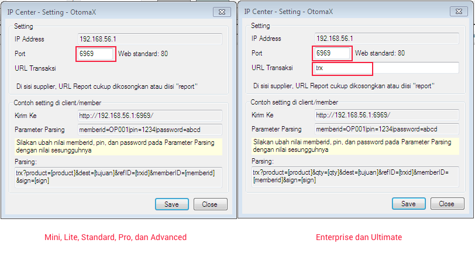
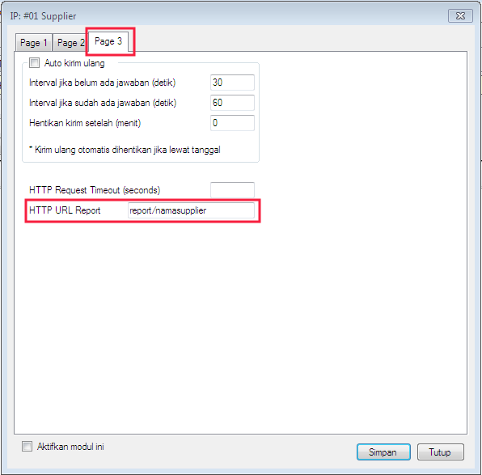
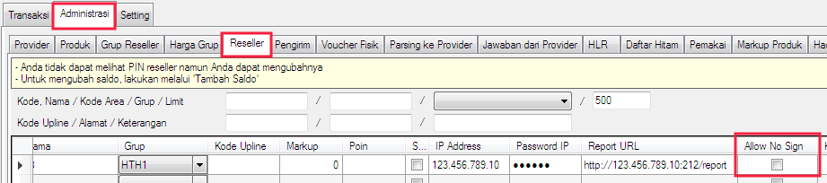

IP Center (4.0.0)
Modul IP Center telah tersedia sejak versi 3.6.8 di OtomaX klik disini, kegunaannya untuk menerima transaksi IP dari Sedoter (istilahnya IP Center - Center) sehingga Anda bisa menjadi Supplier, dan menerima laporan status transaksi IP dari Supplier (istilahnya IP Center - Report) sehingga Anda bisa menjadi Sedoter (pengambil stok).
Di versi 4.0.0 terdapat pembaharuan yakni OtomaX edisi Mini, Lite, Standard, Pro, Advanced juga dapat melakukan transaksi IP namun hanya sebagai Sedoter saja, tidak bisa menjadi sebagai Supplier. Jika ingin bisa transaksi IP bukan hanya sebagai Sedoter melainkan juga sebagai Supplier, maka harus menggunakan OtomaX edisi Enterprise atau Ultimate klik disini, namun tak perlu khawatir bilamana OtomaX Anda bukan edisi tersebut, Anda dapat melakukan upgrade klik disini. IP Center di versi ini juga telah dilengkapi dengan pengamanan dari serangan brute force.
Perlu diketahui, meskipun hanya untuk menjadi Sedoter, transaksi IP tetap membutuhkan IP Publik Statis dan pendukung lainnya, selengkapnya klik disini; jikalau tidak ada, maka transaksi IP tidak dapat dilakukan.
Berikut ini langkah mensetting modul IP Center:
- Pastikan telah menyiapkan hal - hal yang diperlukan untuk transaksi IP, klik disini.
-
Pastikan telah melakukan Port Forwarding ke Port 6969 (default). Anda dapat menentukan
Port yang hendak digunakan di IP Center -> klik kanan -> klik Setting -> box:
Port.
Untuk melakukan Port Forwarding silahkan hubungi ISP (Internet Service Provider) tempat Anda mengambil IP Public Statis, seperti Telkom Indonesia, First Media, Biznet, dan lain - lain.
- Pilih IP Center -> klik kanan -> klik Aktifkan.
- Selesai.
Setelah modul IP Center aktif, Anda dapat melakukan transaksi IP ke Supplier klik disini; dan atau menerima transaksi IP dari para Sedoter klik disini jikalau edisi OtomaX Anda ialah Enterprise atau Ultimate.
Sebagai tambahan informasi, di Modul IP Center di OtomaX v4.0.0 (pilih IP Center -> klik kanan -> klik Setting) Anda dapat menentukan:
- Port di box: Port. Defaultnya adalah 6969.
- URL Transaksi. Defaultnya adalah trx, jadi ketika Sedoter hendak bertransaksi ke server Anda dapat melakukan request ke http://ippublikstatisanda:6969/.

Menentukan Port dapat dilakukan di semua edisi OtomaX berbayar, sedangkan menentukan URL Transaksi hanya bisa dilakukan di edisi Enterprise dan Ultimate.
Selain itu, di versi 4.0.0 terdapat beberapa menu setting IP Center yang dipindah:
-
URL Report, dipindah ke modul IP Client -> klik kanan -> klik Setting -> klik tab
Page 3 -> box: HTTP URL Report, disini Anda dapat menentukan URL Report, misal
diisi: report/namasupplier, sehingga ketika Anda ingin transaksi ke Supplier berikan
http://ippublikstatisanda:6969/report/namasupplier.

-
Checkbox Izinkan transaksi tanpa parameter [sign], dipindah ke Administrasi ->
Reseller -> checkbox: Allow No Sign di masing - masing Reseller. Bila ingin memperbolehkan
Reseller tertentu transaksi IP tanpa parameter [sign] centang Allow No Sign; bila tidak,
hilangkan centang.

Kemudian bila Anda memiliki pertanyaan seputar transaksi IP silahkan kirimkan ke alamat email support@otomax-software.com.
Catatan: Sedoter ialah lawan dari supplier, yakni server yang mengambil stok atau host to host ke server lain; sedangkan Supplier ialah server yang stoknya diambil oleh server lain.